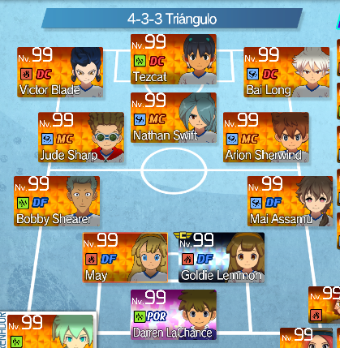
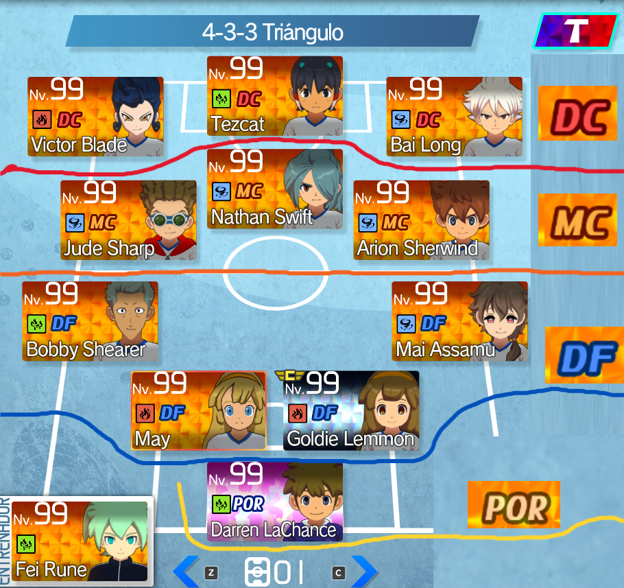

MECÁNICAS
Con mecánicas me refiero a las mecánicas de juego, cosas como los pases y todo lo demás. En este apartado voy a explicar cada una de ellas con todo el detalle que sea lógico darle.
-2 Posesión del balón (Ofensiva)
-3 No posesión del balón (Defensa)
-1 Conceptos generales
Formación
La formación es muy importante, define las posiciones por las cuales se moverán los jugadores a la par que la cantidad de jugadores que habrán en cada posición. Los números representan la cantidad de Defensas/Mediocampistas/Delanteros.

Posiciones
Cada jugador dentro de tu formación cumplirá una posición según donde se encuentre. Recalcar que los jugadores
cumplen un rol principal y están hechos para de base funcionar en una posición, pudiendo cambiar a otra gracias al tablón de habilidades
o porque el jugador lo haya reconvertido. Si no sabes reconvertir, usa al jugador en su posición predeterminada.
-Delantero: Los delanteros serán los encargados de tirar a la portería enemiga, estarán delante de todo el equipo.
-Mediocampista: Los mediocampos están de punto medio entre la defensa y ataque, lo suyo es que puedan regatear y defender, aunque en algunos
casos puede ser rentable que suban al ataque, es un rol muy mixto.
-Defensa: Los defensas se centran en bloquear al rival y bloquear el balón cuando tiren a puerta. Por lo general habrán defensas que tengan
que bloquear más tiros que los demás debido a su posición, es importante saber esto a futuro.
-Portero: El trabajo del portero es simple, defender la portería, no merece mucha explicación.

Las barras
Mientras juegues contarás con diversos medidores con diferentes funciones cada uno.
El medidor de tensión es el medidor que usas para ejecutar supertécnicas, cada una tiene su coste. Para ganar tensión la principal forma es ganando duelos de foco, el medidor se comparte entre todo el equipo. Recuerda que las supertécnicas de cada jugador tienen tiempo de espera
El medidor de hipertécnica te permite ejecutar hipertécnicas, estas son mejoras temporales para los jugadores, el medidor se llena al ejecutar supertécnicas y se puede gastar una barra cuando esta se llene.
El medidor de afinidad es un medidor que sube cuando conectas pases con tus compañeros. Cuanto más alto el número, más potencia de tiro tendrás, pero el medidor se reduce si te roban el balón

Las faltas
Al ejecutar ciertas acciones (Segadas, arrollar o cargas) puedes recibir aleatoriamente una falta. Esta puede variar entre falta normal, tarjeta amarilla o roja dependiendo de las condiciones y si un jugador ha recibido una amarilla, puede recibir una roja lo que te obliga a retirar al jugador y jugar con un jugador menos


Fuera/Fuera de juego
Si el balón se sale fuera de las líneas o un pase se salta mucho a los defensas, se le otorgará la pelota a la persona que no haya hecho el fuera/fuera de juego, es algo muy básico del fútbol y fácil de entender
La vida de los porteros
Para marcar gol, se ha de tirar a una portería sin portero o bajar a 0 la vida del portero. Esta vida se ve como un número o como una barra al lado del nombre. Se puede bajar con tiros, haciendo más daño con supertécnicas, hipertécnicas, tiros encadenados, tiros directos y supertácticas y se puede reducir el daño recibido con barreras, supertécnicas, hipertécnicas y supertácticas


Supertácticas
Las supertácticas son una especie de habilidades temporales que puedes activar en el campo usando L o LB seguido del botón correspondiente. Sus efectos varían entre alterar al oponente o mejorar a tu equipo y pueden generar un área donde ocurren efectos especiales, aplicar efectos permanentes o permitir a tu equipo avanzar de cierta forma si la técnica tiene efecto. Se pueden activar cada cierto tiempo y solo puede haber una activa en el campo a la vez. En partidos online al inicio del partido obtienes una especial de pasiva la cual es independiente de tus tres equipadas y puedes obtener más ganando duelos si ya no la tienes.

Afinidades
Las afinidades son un piedra papel tijera muy sencillo. Fuego gana a bosque, bosque gana a viento, viento gana a montaña y montaña gana a fuego. Las afinidades se separan entre la afinidad del jugador y de la técnica, así que los duelos de afinidades se separan entre el jugador y su supertécnica. Si se hace un tiro sin supertécnica, no habrá duelo de afinidades en este apartado, esto también aplica a las supertécnicas neutras (las moradas), las cuales no se ven afectadas por duelos de afinidades.
Brechas y paradas
Este apartado es rápido, hay una probabilidad de que aleatoriamente al recibir un tiro, ocurra una brecha o parada. Estas probabilidades pueden verse afectadas por pasivas y supertácticas. La brecha ocurre cuando un portero recibe un tiro y aumenta mucho el daño del tiro en base a tu tensión restante, si marcas con ella tu tensión se verá vaciada, es posible sobrevivirla si quien la ha hecho tiene poca tensión. La parada en cambio permite al portero parar el tiro sin sufrir nada de daño siempre que el portero conecte con el balón. Estas dos mecánicas son aleatorias y en la mayoría de casos escaparán a tu control.
-2 Posesión del balón (Ofensiva)
En esta sección me centraré en las diferentes mecánicas al tener el balón en posesión. Tu objetivo en esta fase es llegar a la portería rival
Movimiento con el balón
Te mueves con el stick izquierdo(L)
Correr con el balón
Al pulsar R2,RT o ZR puedes sprintar, al tener el balón esto te puede servir para evitar duelos usado correctamente pero no te protege de faltas, pero cuidado con el uso de la stamina, es compartida entre todos los miembros del equipo y si se acaba tendrás que esperar a que se regenere entera
Correr agresivamente
Si pulsas B, A o círculo (depende de tu control/controles) mientras corres, entrarás en un estado de placaje, al chocar con otros enemigos los mandarás volando evitando duelos completamente, pero gastarás más stamina y tendrás una posibilidad de hacer falta y perder el balón o recibir tarjeta.
Pase
La mecánica más importante, pues es la forma más eficaz de evitar duelos. Se hace con A, B o X (Depende de tu control/controles) y en base a la dirección a la que esté mirando el personaje te muestra cual personaje está cerca para hacer el pase, si pulsas se la pasará a ese jugador. Por lo general si hay enemigos hará automáticamente el pase hacia arriba para evitarlos.
Pase dirigido
Si mantienes pulsado el botón de pase, podrás dirigir el pase en la dirección a la cual te muevas para mover al jugador donde te interese
Pase alto
El pase alto se hace con la Y, X o triángulo(Depende de tu control/controles) y fuerza que el pase se haga hacia arriba, no suele ser muy controlable y el pase normal ya suele cumplir.
Esquivar segada
Este movimiento es muy importante, se ejecuta con la B, A o círculo(Depende de tu control/controles) y te permite esquivar una segada
Saque portero
Cuando el portero obtiene la bola las propiedades del pase cambian
Disputa
Las disputas son un tipo de duelo que ocurre tanto en ataque y en defensa. Cuando un pase aéreo cae en un lugar donde hay dos jugadores pegados, estos comenzarán una disputa. Saldrán tres jugadores posibles a los que mandar la bola y la probabilidad de que ganes al elegirlos y deberás darle al botón del jugador que quieras cuando el círculo externo llegue al interno
-3 No posesión del balón(Defensa)
En esta sección explicaré las mecánicas cuando no cuentas con el balón. Tu objetivo en esta fase es recuperar el balón
Moverse
Al defender puedes correr y moverte al igual que cuando tienes el balón, si tocas a un jugador, entraréis en un duelo de foco por el balón
Cambiar de jugador
Al defender puedes pulsar A, B o X (Depende de tu control/controles) para cambiar de jugador, para elegir se elige al jugador más cercano en la dirección a la que estás mirando aunque no siempre es posible cambiar a un cierto jugador debido al movimiento de la pelota
Campo de foco
Cuando estás a cierta distancia, puedes usar L2, LT o ZL para activar el campo de foco, esto te permitirá entrar en duelo si el jugador con el balón se encuentra en el campo en su activación
Segada
Puedes usar B, A o círculo (Depende de tu control/controles) para poder hacer una segada, si no es esquivada por el rival podrás robar la pelota sin entrar en duelo pero tienes riesgo de recibir una falta
-4 Focos ofensivos
Cuando entras en duelo con la pelota, entras en un foco de ataque, donde tu objetivo es esquivar a tu oponente para avanzar
Paso lateral
Pulsando la A, B o círculo (Depende de tu control/controles) podrás saltar hacia los lados para intentar abrir un hueco en tu oponente. Puedes usar el modo auto, pero no es recomendable
Paso directo
No tiene nombre oficial como tal, es ejecutar el pase lateral hacia delante, lo que muestra una flecha que es la dirección hacia la cual se lanzará nuestro personaje. El objetivo es evitar las manos o el cuerpo del oponente para poder rebasarlo, las estadísticas son importantes en este duelo.
Pase
Nada más empezar el duelo verás unos cuadrados cargarse abajo y después decir "Pase Ok", cuando eso salga, podrás hacer un pase a un compañero para escapar del duelo. Ten en cuenta que le darás tensión al enemigo al hacerlo.
Supertécnicas
Ya sea activándola tú o respondiendo a tu oponente, las super técnicas de regate te permiten contestar a tu rival en un duelo donde gana quien más potencia tenga, siempre que ambas personas entren con una técnica o carga, en caso de que solo uno ejecute una de estas se le dará la victoria. También puedes ejecutar un tiro largo, a lo cual el rival solo podrá responder con una hipertécnica para evitar que lo hagas.
Carga
Si tu rival te lanza una supertécnica, tú puedes responder con una carga, esta tendrá bastante riesgo de falta pero te hará el apaño de supertécnica para aunque sea poder responder al contrario
Hipertécnicas
Las hipertécnicas son su propia cosa a parte, estas van de Espíritus guerreros (Keshin), Armaduras, Miximax, Tótems y despertares y cumplen la función de otorgarle mejoras temporales a un jugador. Se pueden usar para ganar duelos y si se usa en un duelo solo otra hipertécnica podrá pelearle
-5 Focos defensivos
Los focos defensivos son iguales que los ofensivos solo cambiando que no puedes hacer pase (por obvias razones) y debes evitar el paso del rival
Paso lateral
En este caso, el paso lateral es para mover a tu jugador junto a las manos que es lo que actua de barrera, deberás seguir al enemigo para que no pueda rebasarte
Supertécnicas
Aquí aplica lo mismo que en el apartado de regate, puedes usar una supertécnica en el duelo o como respuesta a una técnica enemiga para poder entrar directamente en un duelo de puntos y afinidades. Reutilizo el mismo vídeo del regate porque es lo mismo
Cargas
Al igual que con las supertécnicas, las cargas funcionan igual en la defensa que en los regates, puedes contestar a una técnica enemiga con una carga que te puede permitir ganar el duelo bajo el riesgo de falta. Reutilizo el mismo vídeo del regate porque es lo mismo
Hipertécnicas
Lo mismo aplica, el uso de Hipertécnicas es igual que en el regate, pero aquí tienen la particularidad de poder evitar que el rival use un tiro largo, caso en el cual una supertécnica en duelo no podría parar.
-6 Área ofensiva
Cuando te acercas a la portería enemiga, tú o tu rival podéis activar el área, momento donde el tiempo se detiene y puedes preparar tu ataque mientras el enemigo trata de bloquearte. Tu objetivo será lograr sacar el máximo poder de tiro evitando que el rival te pare con sus barreras o incluso te robe el balón. En esta sección voy a comentar todo lo que puedes utilizar y aportaré un vídeo juntando todas estas mecánicas
Pase
Dentro del área también puedes hacer pases, esto es muy importante tanto para encontrar aperturas sin barreras como para activar un tiro directo.
Tiro
Puedes usar un tiro sin usar ninguna supertécnica, esto no consumirá nada de tensión pero a menos que lleves cierto arquetipo no harás mucho daño. Ten en cuenta que al apuntar a la portería habrán ciertos puntos donde harás más daño si disparas, pero es más importante evitar una barrera que atacar a esos puntos. Nota: Puedes tirar fuera del área con las supertécnicas que lo permitan(de tiro largo)
Tiro directo
Cuando haces un pase, el tiempo avanza un poco más rápido y se detiene cuando a la pelota le queda poco para llegar, si antes de que la pelota llegue a tu personaje tiras con o sin supertécnica infligirás más daño.
Supertécnicas
Puedes chutar usando supertécnicas. Esto añadirá la afinidad de la técnica y aumentará la potencia de la misma.
Hipertécnicas
Dentro del área también puedes activar tus hipertécnicas para poder recibir sus mejoras y todo. Recuerda activar la hipertécnica antes de comenzar a hacer tiros
Tiros encadenados
Cuando tiras con una supertécnica, puedes apuntarla a un compañero, siempre que chutes con una supertécnica, puedes seguir encadenando hasta que te quedes sin tensión donde tendrás que rematar con un tiro normal hacia la portería. Siempre que puedas evitar las barreras, suele rentar hacer una técnica y rematar con un tiro normal pero hay que tener cosas en cuenta.
-7 Área defensiva
Cuando el rival se acerca a tu portería, él o tú podéis activar el área. En esta activación del área, tu misión será colocar barreras para evitar el paso del rival o en caso de que tire reducir la potencia del tiro y que el portero sufra el menor daño posible.
Barreras
Usando X, A o B (Depende de tu control/controles) puedes colocar una barrera donde hayas seleccionado, una barrera es cuando un jugador se coloca en el lugar seleccionado, generando un ligero área donde el jugador detendrá el balón o reducirá más daño en caso de tiro. Si el jugador no llega a formar la barrera igualmente reducirá algo el daño si tiene contacto directo con el balón, esto aplica a jugadores que no estén montando área incluso. Solo puedes colocar 2 barreras al mismo tiempo, intentar colocar una más borrará la anterior
Supertécnicas de bloqueo
Algunas supertécnicas de defensa o tiro pueden bloquear tiros en el área, esto permite que reduzcan mucho el daño del tiro.
El portero
El portero puede hacer muchas cosas.
-1 Puedes mover al portero con la flecha arriba, esto te permite recolocarlo para evitar que te marquen sin
él presente o para coger el balón,
el portero es demasiado rápido y muchas veces puedes conseguir el balón antes de que tiren o cortar un pase.
-2 El portero puede activar hipertécnicas cuando va a recibir el tiro para obtener sus mejoras.
-3 El portero puede activar supertácticas cuando va a recibir el tiro para obtener sus mejores o limitar al
equipo enemigo.
-4 El portero puede usar supertécnicas cuando va a recibir el tiro para reducir el daño recibido.
-5 El portero puede recibir el tiro sin más.